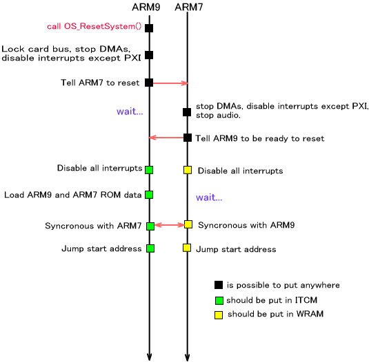
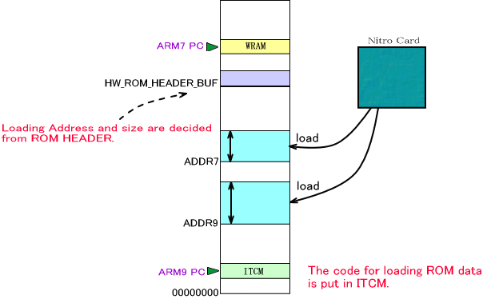
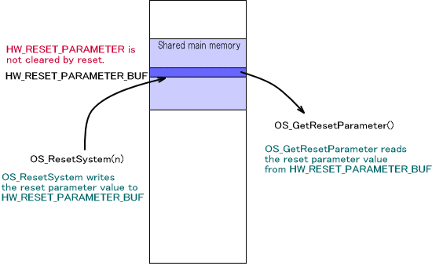

NitroSDK にはリセットシステムが用意されています。これは、カードからメインメモリにROMデータを読み込んで適切なアドレスにPCを移動することで、プログラムを先頭から実行し直すための仕組みです。
このリセットシステムを使用する場合は、予め OS_InitReset()が呼ばれていなければなりませんが、OS_Init() を呼んでいる場合はその中で呼び出しを行なっていますので、特にアプリケーション側で呼び出す必要はありません。
リセットをかけることが出来るのは、ARM9 からのみです。その命令は、 OS_ResetSystem() となります。ARM7では、ARM9 からのリセット指示が出るまで、通常の動作を行ない、リセットの指示が
PXI 経由で送られると( PXI 割り込みとして通達されます ) 、リセット処理を開始します。
リセット処理の内部動作について
OS_ResetSystem() を呼んだ後の２つのプロセッサの動作について説明します。

ARM9 側は、カードバスのロック解除を待ち、すぐにカードバスをロックします。次にすべてのDMAを終了させます。そしてARM7からの通信のためにPXI受信割り込みのみを有効にし、その他の割り込みを禁止します。そしてARM7 にリセット通知を行ないます。
ARM7側では、ARM9 からのリセット通知を受け取り、すべてのDMAを終了させ、ARM9からの通信のためにPXI受信割り込みのみを有効にします。またサウンドライブラリに停止を通達します。
ここからは ARM9 は ITCM、ARM7 はWRAM上での動作となります。
ARM7、ARM9 ともに全割り込みを禁止します。その後、ARM9がメインメモリの共有エリアに格納されているROMヘッダ情報にしたがって、カードからROMデータを読み込みます。

読み終わった後に一旦同期を取り、ARM7、ARM9とともに、メモリやレジスタのクリアを行ないます。
ROMヘッダ情報に従い、開始アドレスを PC (program counter) に設定します。
リセットパラメータについて
リセットシステムには、現在のプログラム動作が電源投入後か、再実行後かの判定などに使用できる「リセットパラメータ」というu32値が用意されています。
リセットパラメータを取得する関数は OS_GetResetParameter() です。この値は、電源投入後は常に 0 ですが、一度 OS_ResetSystem() を呼び出した後は、その OS_ResetSystem() の引数の値となります。複数回リセットした場合は、最後に呼び出された OS_ResetSystem() の引数の値となります。
リセットパラメータが格納されている領域は、メインメモリの共有領域内で、この部分はリセット処理ではクリアされませんのでリセット後のプログラムに値を渡すことが可能です。

2005/03/08 用語統一 [割込み] → [割り込み]
2004/12/13 用語や語尾など修正
2004/11/02 初版